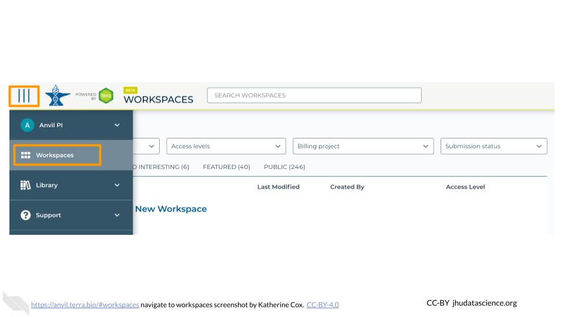
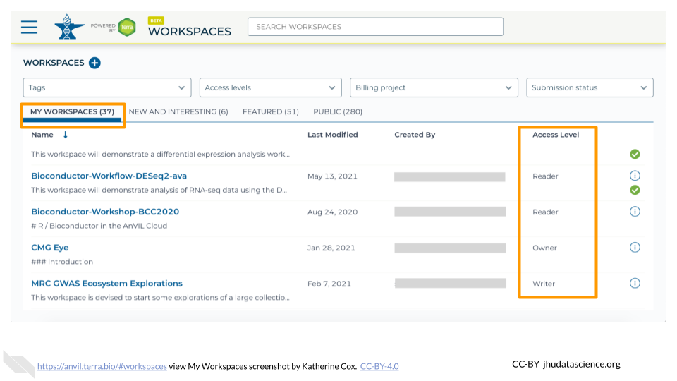
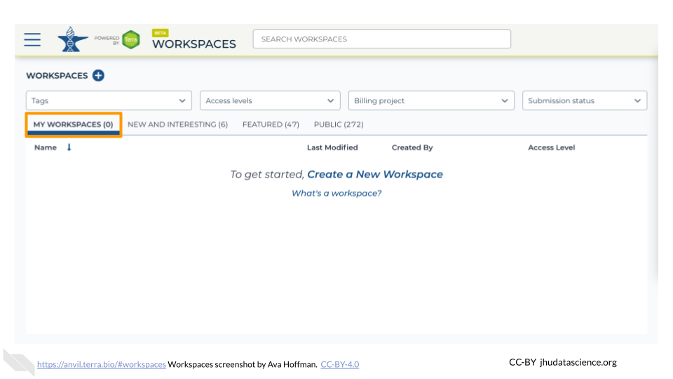
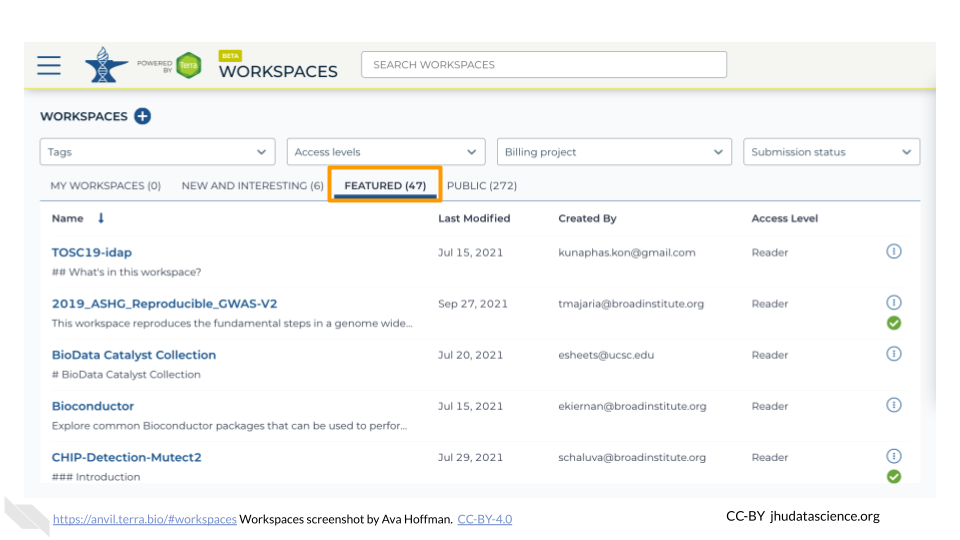
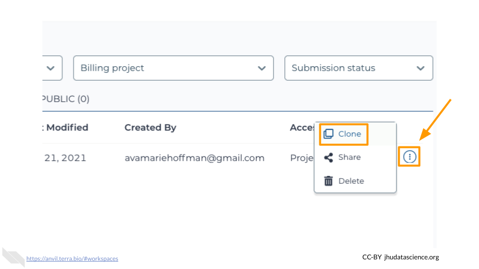
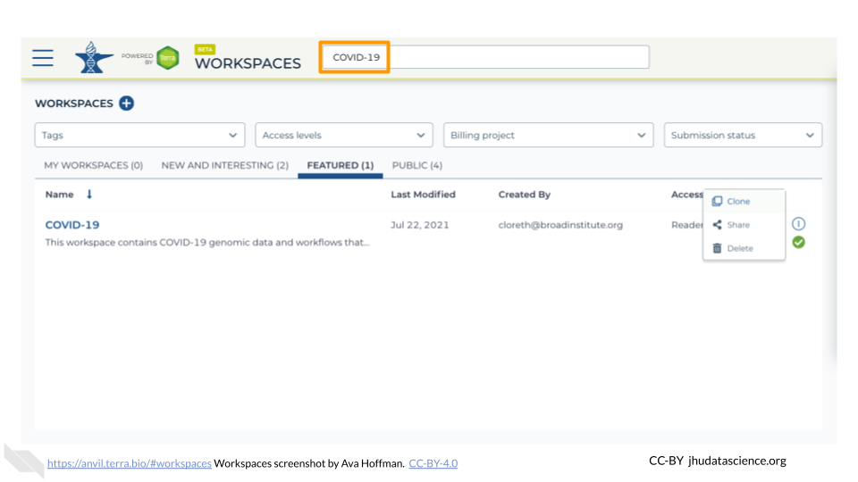
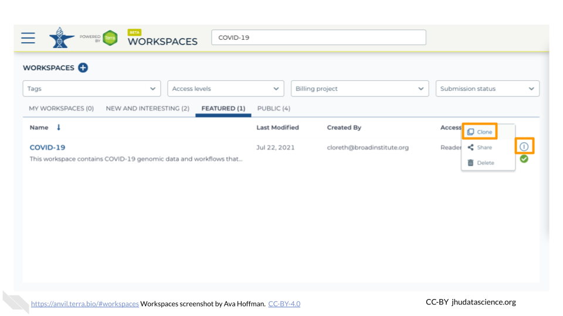
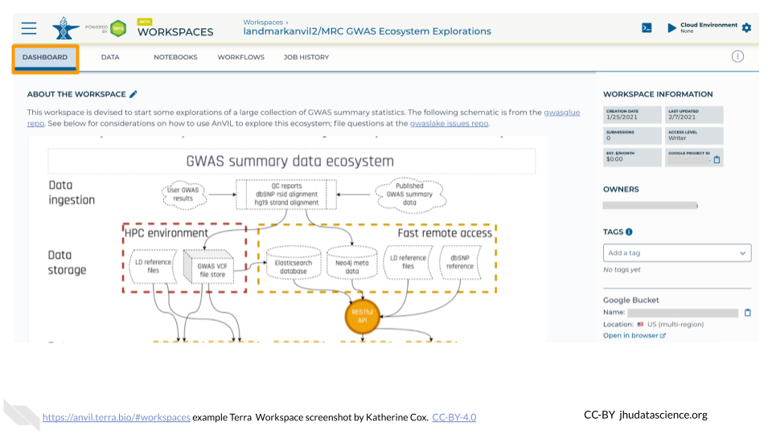

Chapter 2 Access Materials
Next you will need to access the required materials and software.
This will not work until your instructor has given you permission to spend money to “rent” the computers that will power your analyses, (by adding you to a “Billing Project”).
On AnVIL, you access files and computers through Workspaces. Each Workspace functions almost like a mini code laboratory - it is a place where data can be examined, stored, and analyzed. The first thing we want to do is to copy or “clone” a Workspace to create a space for you to experiment. This will give you access to
- the files you will need (data, code)
- the computing environment you will use
**Tip**
At this point, it might make things easier to open up a new window in your browser and split your screen. That way, you can follow along with this guide on one side and execute the steps on the other.To clone an AnVIL Workspace:
Open Terra - use a web browser to go to
anvil.terra.bioIn the drop-down menu on the left, navigate to “Workspaces”. Click the triple bar in the top left corner to access the menu. Click “Workspaces”.

You are automatically directed to the “My Workspaces” tab. Here you can see any Workspaces that have been shared with you, along with your permission level. Depending on how your instructor has set things up, you may or may not see any Workspaces in this tab.

Locate the "Workspace_name" Workspace.
- If it has been shared with you ahead of time, it will appear in “MY WORKSPACES”.

- Otherwise, select the “PUBLIC” tab. In the top search bar, type the name of the workspace "Workspace_name".

- You can also go directly to the Workspace by clicking this link: Workspace_link.
Clone the workspace by clicking the teardrop button (
 ). Select “Clone”. Or, if you have opened the Workspace, you can find the teardrop button on the top right of the Workspace.
). Select “Clone”. Or, if you have opened the Workspace, you can find the teardrop button on the top right of the Workspace.

You will see a popup box appear, asking you to configure your Workspace
- Give your Workspace clone a name by adding an underscore (“_“) and your name. For example, "Workspace_name_First_Last".
- Select the Billing project provided by your Instructor.
- Leave the bottom two boxes as-is.
- Click “CLONE WORKSPACE”.

The new Workspace should now show up under “My Workspaces”. You now have your own copy of the Workspace to work in.
Use the search box to find the Workspace you want to clone.

Click the teardrop button on the far right next to the Workspace you want to clone.

Click on the name of a Workspace to open it. Opening and viewing a Workspace does not cost anything.

When you open a Workspace, you are directed to the Workspace Dashboard. This generally has a description of the Workspace contents, as well as some useful details about the Workspace itself.
